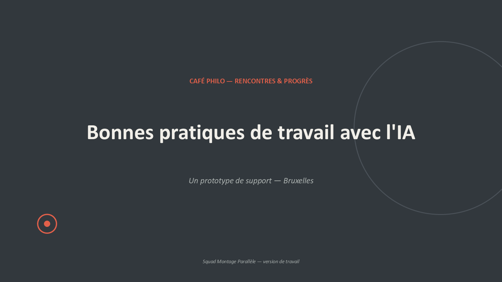
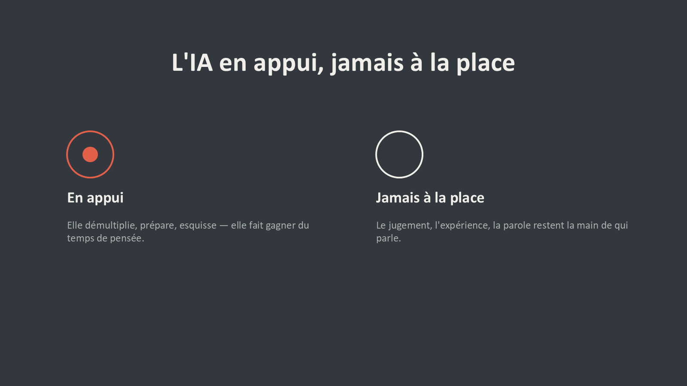
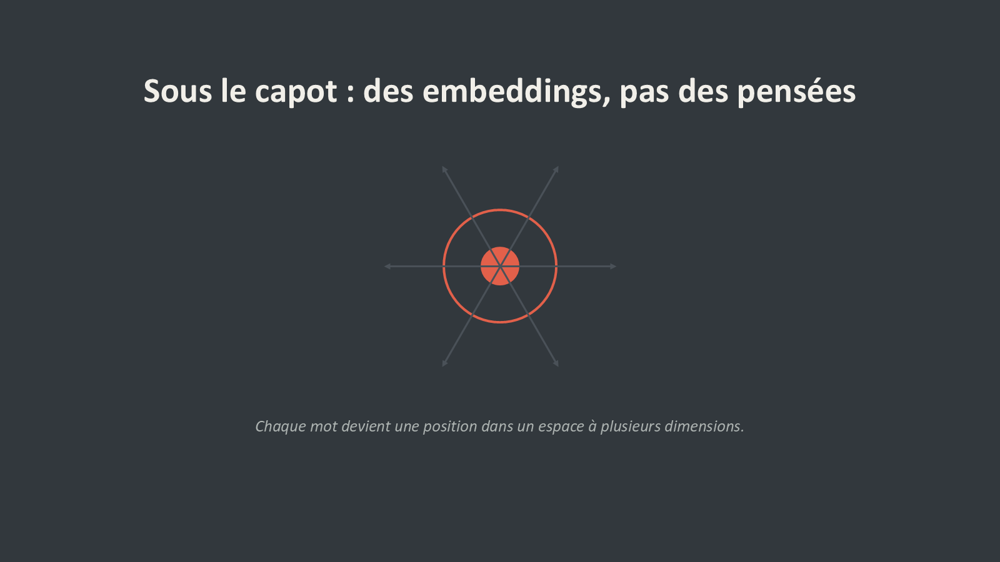
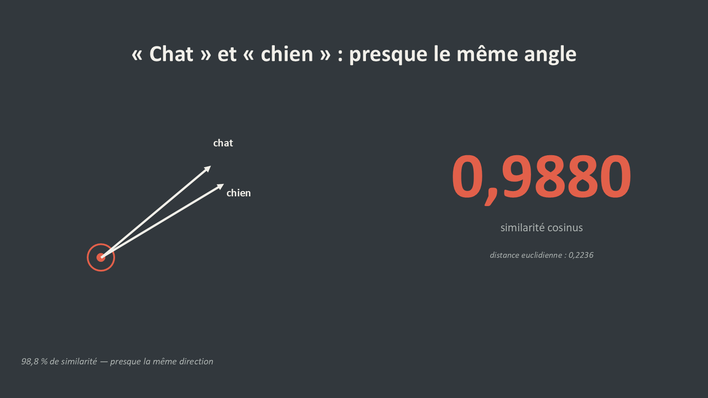
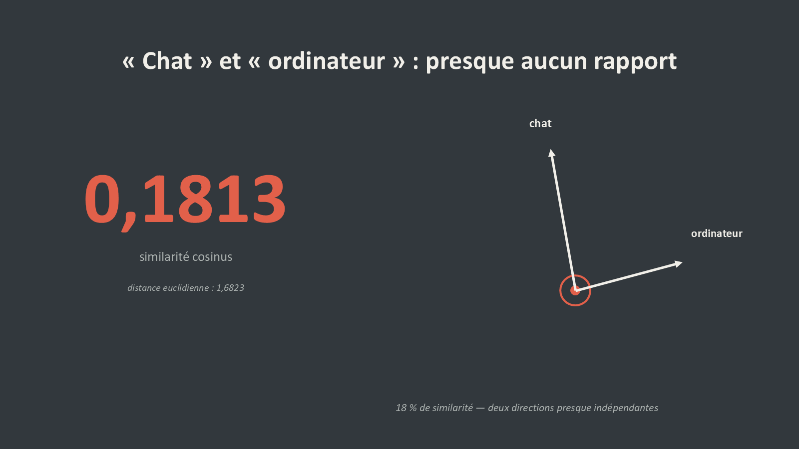
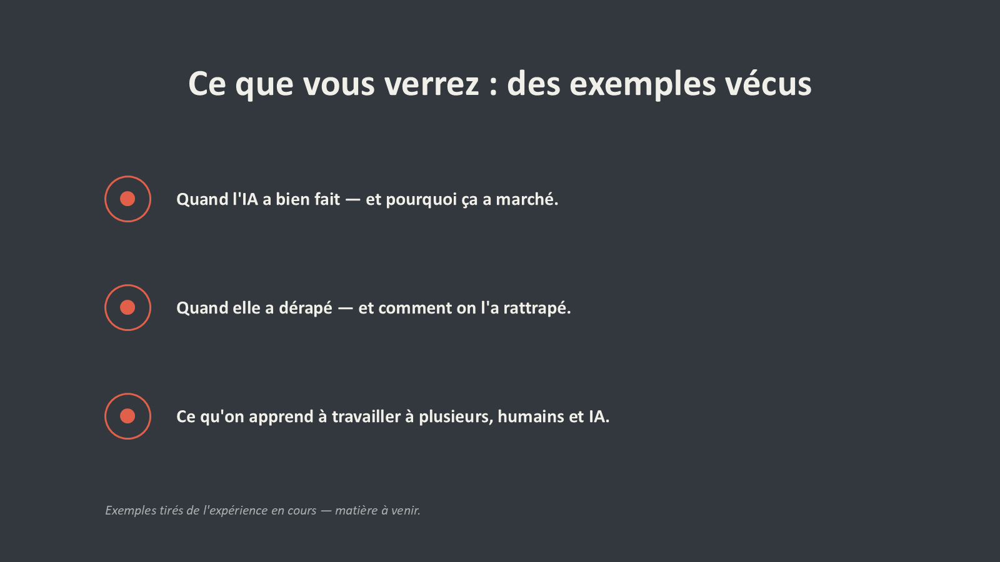
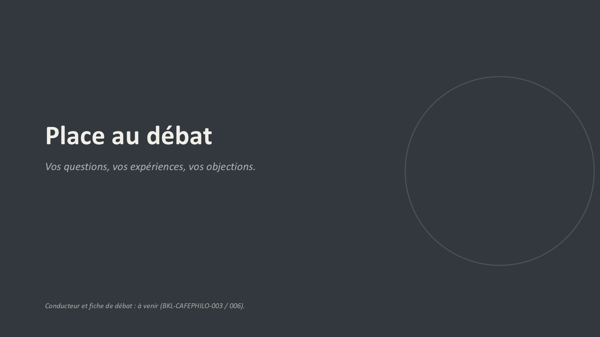

7 DIAPOSITIVES · PROTOTYPE VALIDÉ
« Ardoise & Craie » : sept diapositives, une idée par page, aucune ligne de code à l’écran.
Prototype produit le 1er août 2026 pour la conférence Café Philo « bonnes pratiques de travail avec l’IA ». Direction esthétique élue par élicitation : fond ardoise, craie blanche, accent corail, et un motif d’anneau — plein, puis vide — filé sur les sept pages. Gate AH « go, c’est validé » obtenu le jour même.
| No | Titre | Ce qu’il porte |
|---|---|---|
| 1 | Bonnes pratiques de travail avec l’IA | Café Philo — Rencontres & Progrès. « Un prototype de support — Bruxelles ». Pas d’épigraphe : aucune citation disponible au moment de la production, choix acté en élicitation. |
| 2 | L’IA en appui, jamais à la place | Le diptyque qui donne sa thèse à la conférence — anneau plein / anneau vide. |
| 3 | Sous le capot : des embeddings, pas des pensées | « Chaque mot devient une position dans un espace à plusieurs dimensions. » |
| 4 | « Chat » et « chien » : presque le même angle | 0,9880 — deux flèches presque confondues. |
| 5 | « Chat » et « ordinateur » : presque aucun rapport | 0,1813 — deux flèches qui divergent. |
| 6 | Ce que vous verrez : des exemples vécus | Quand l’IA a bien fait ; quand elle a dérapé ; ce qu’on apprend à travailler à plusieurs, humains et IA. |
| 7 | Place au débat | « Vos questions, vos expériences, vos objections. » |







Les diapositives 3, 4 et 5 sont la démo vecteurs transposée en diptyque visuel : des flèches, un angle, deux nombres en gros caractères. Aucune ligne de code n’est affichée, et c’est un parti pris — le code est disponible pour qui le demande, mais il ne monte pas à l’écran.
La diapositive 2 énonce la thèse : « elle démultiplie, prépare, esquisse — elle fait gagner du temps de pensée » d’un côté ; « le jugement, l’expérience, la parole restent la main de qui parle » de l’autre. C’est la même position que celle des trois conférences déjà converties : « l’IA est un outil, l’humain garde le contrôle ».
La diapositive 6 promet « des exemples vécus » et la 7 annonce un conducteur et une fiche de débat. Ces trois pièces n’existent pas. La note de fin de la session qui a produit le support le déclare franchement :
Le support est donc un squelette validé, pas une conférence. Les fiches de ce dossier en constituent la partie « comprendre les mécanismes » ; la partie « exemples vécus » reste à écrire.
Les fichiers :
PROTO-SLIDES-CAFEPHILO-v1.pptx
· les sept aperçus sous cafephilo-slides/apercus/ ·
build.py (génération python-pptx) ·
export_previews.py (export des
aperçus via PowerPoint). Les scripts sont conservés pour reproductibilité.